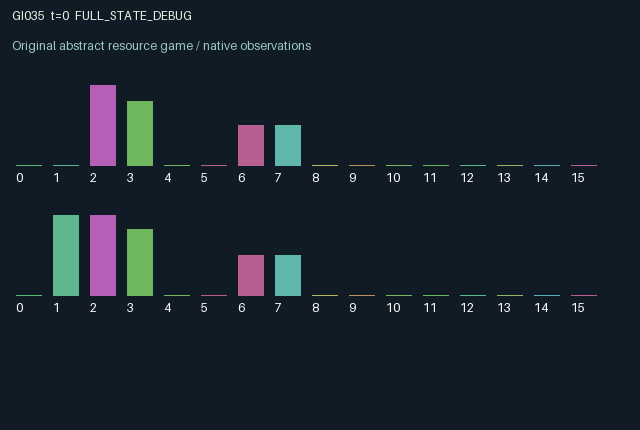

GI035 / LEGACY_ARRAY
astra-d2-00035: durable reports, historical audits and shared access control
2 agents5 actions16 observation columns32 original horizonRuntime: PASS
Release verification episode
Untrained uniform legal actions. Actual JAX state sampled along the full original episode; full-state debug camera. No human performance or learning claim.

Run this game
crucibles play --game 35
Start Python locally, then open the address printed by the terminal. Installation, multiplayer, takeover and keyboard controls →
Objective, rewards & ending
Exact task contract
{
"objective": "Accumulate original per-agent rewards under the interaction rules in mechanism.md.",
"natural_termination": "No early terminal; original t >= 32 horizon.",
"exact_transition_and_reward_source": "def raw_step(self, key, state, actions):\n keys = jax.random.split(key, 2)\n regime_sign = 2.0 * state[\"regime\"].astype(jnp.float32) - 1.0\n publish = (actions == 0) | (actions == 1)\n reported_sign = jnp.where(actions == 0, -1.0, 1.0)\n audit = (actions == 2) & jnp.roll(state[\"claim_valid\"], 1)\n invest = (actions == 3) | (actions == 4)\n commitment = jnp.where(actions == 3, -1.0, jnp.where(actions == 4, 1.0, 0.0))\n\n active = jnp.abs(state[\"commitment\"]) > 0.0\n correct = state[\"commitment\"] == regime_sign\n access = 0.35 + 0.65 * 0.5 * (1.0 + state[\"commitment\"] * state[\"gate\"])\n maturity = active.astype(jnp.float32) * jnp.where(correct, 0.65 * access, -0.45)\n rewards = jnp.clip(\n maturity - 0.030 * publish.astype(jnp.float32)\n - 0.040 * (actions == 2).astype(jnp.float32)\n - 0.015 * invest.astype(jnp.float32),\n -1.0, 1.0,\n ).astype(jnp.float32)\n\n reviewed = jnp.roll(state[\"audit_pending\"], 1)\n historical_correctness = jnp.roll(state[\"audit_correct\"], 1)\n trust = jnp.clip(jnp.where(reviewed, 0.80 * state[\"trust\"] + 0.20 * historical_correctness, state[\"trust\"]), 0.05, 0.95)\n claim = jnp.where(publish, reported_sign, state[\"claim\"])\n claim_valid = state[\"claim_valid\"] | publish\n claim_age = jnp.where(publish, 0, jnp.minimum(state[\"claim_age\"] + 1, 32)).astype(jnp.int32)\n weight = trust * claim_valid.astype(jnp.float32) / (1.0 + 0.15 * claim_age.astype(jnp.float32))\n target = jnp.sum(weight * claim) / jnp.maximum(jnp.sum(weight), 0.10)\n gate = jnp.clip(0.75 * state[\"gate\"] + 0.25 * target, -1.0, 1.0)\n flip = jax.random.bernoulli(keys[0], p=0.14)\n regime = jnp.where(flip, 1 - state[\"regime\"], state[\"regime\"]).astype(jnp.int32)\n next_sign = 2.0 * regime.astype(jnp.float32) - 1.0\n signal = jnp.where(jax.random.uniform(keys[1], (2,), dtype=jnp.float32) < state[\"accuracy\"], next_sign, -next_sign)\n\n next_state = {\n \"t\": state[\"t\"] + jnp.array(1, dtype=jnp.int32),\n \"regime\": regime,\n \"accuracy\": state[\"accuracy\"],\n \"signal\": signal,\n \"claim\": claim,\n \"claim_valid\": claim_valid,\n \"claim_correct\": jnp.where(publish, (reported_sign == regime_sign).astype(jnp.float32), state[\"claim_correct\"]),\n \"claim_age\": claim_age,\n \"trust\": trust,\n \"gate\": gate,\n \"commitment\": commitment,\n \"audit_pending\": audit,\n \"audit_correct\": jnp.where(audit, jnp.roll(state[\"claim_correct\"], 1), 0.0),\n \"audit_result\": jnp.where(state[\"audit_pending\"], 2.0 * state[\"audit_correct\"] - 1.0, 0.0),\n \"last_maturity\": maturity,\n }\n done_all = next_state[\"t\"] >= 32\n dones = jnp.full((2,), done_all, dtype=jnp.bool_)\n info = {\"done_all\": done_all, \"legal_mask\": self.legal_actions(next_state)}\n return self.observe(next_state), next_state, rewards, dones, info"
}Declared per-step reward bounds: -1.0 to 1.0. Observability: source_defined.
Rules
Original mechanism document (historical status wording retained)
# astra-d2-00035: durable reports, historical audits and shared access control This is an original parentless source proposal under work request `astra-d2-initial-00032-00035-a00`. Its generic relations are noisy information aggregation, costly verification, reputation and delayed commitment. No benchmark, parent source, peer proposal or evaluation outcome was inspected. Nonisomorphism and mechanism eligibility are not asserted. A hidden binary regime persists with a 0.14 per-step switching probability. Each participant receives an independently noisy private signal with a fixed, privately observed sensor accuracy sampled at reset. Agents can publish persistent signed claims. A shared access gate moves gradually toward the age-discounted, credibility-weighted average of those public claims. Thus reporting changes a physical payoff multiplier for both participants, beyond merely placing a message in observations. The five legal actions are: 0 publish a negative claim; 1 publish a positive claim; 2 audit the other participant's existing claim; 3 make a negative commitment; 4 make a positive commitment. A commitment matures on the following transition and is evaluated against the regime and gate then in state. A correct commitment earns a positive payment scaled by directional gate access; an incorrect commitment loses a fixed amount. A fresh commitment, report or audit consumes the current action and has its stated cost. The auditor snapshots whether the opponent's pre-transition claim was correct at that claim's publication time. That result remains hidden in the pending audit for one transition. The next transition exposes the auditor's result and updates the reviewed agent's persistent credibility. Replacing a claim while an audit is pending does not change the historical assessment. An audit on a step with no existing peer claim yields no assessment but still incurs the audit action cost. Simultaneous new claims are not included in that step's audit snapshot. These conventions explicitly separate information gathering, verification delay, credibility and physical control. Claims age until renewed, and their weights decrease with age even if their historical credibility is high. The gate uses new reports and newly delivered old audit results, then moves only one quarter of the distance toward the weighted target. Current maturity rewards use the old gate; changing reports cannot change an already maturing payoff retrospectively. Both agents can steer the shared persistent gate or revise the other's influence through audits. Auditing or publishing also forgoes a new commitment, creating a possible private cost for improving future shared information. Whether a learner exploits these effects is untested. Observation columns are: clock; role; private signed signal; own sensor accuracy; own public claim; other public claim; own credibility; other credibility; shared gate; own claim age; other claim age; own pending commitment; own audit-pending flag; own just-delivered audit result (-1, 0 or +1); own last matured payoff; other audit-pending flag. A zero claim denotes no publication yet. The hidden regime, the other private signal/accuracy and stored historical correctness are not directly observed. All stochastic draws use the explicit reset or step key. The maturity reward is at most 0.65 and at least -0.45; action costs are at most 0.04 per transition. Final clipping to [-1, 1] supplies an explicit bounded utility cap. The interface is A2/O16/U5, with both terminal flags true at step 32 and the actual terminal state retained. No compiler, isolated-validation, duplicate-review, pool-eligibility or learning-effectiveness claim accompanies this source. Only static syntax parsing is within the author's work scope.
Commands
0Publish negative report
1Publish positive report
2Audit partner report
3Invest negative
4Invest positive
Roles & abilities
agent_0 Original legacy agent; see mechanism and source
agent_1 Original legacy agent; see mechanism and source
Observation permissions
Training receives only the original observation rows. Role cameras use declared visibility; debug cameras are explicitly marked. Local benchmark records log debug exposure and role takeover history.
Exact observation layout
[
{
"slice": [
0,
16
],
"visibility": "exact original observe() below",
"source_code": "def observe(self, state):\n obs = jnp.zeros((2, 16), dtype=jnp.float32)\n obs = obs.at[:, 0].set(state[\"t\"].astype(jnp.float32) / 32.0)\n obs = obs.at[:, 1].set(jnp.arange(2, dtype=jnp.float32))\n obs = obs.at[:, 2].set(state[\"signal\"])\n obs = obs.at[:, 3].set(state[\"accuracy\"])\n obs = obs.at[:, 4].set(state[\"claim\"])\n obs = obs.at[:, 5].set(jnp.roll(state[\"claim\"], 1))\n obs = obs.at[:, 6].set(state[\"trust\"])\n obs = obs.at[:, 7].set(jnp.roll(state[\"trust\"], 1))\n obs = obs.at[:, 8].set(state[\"gate\"])\n obs = obs.at[:, 9].set(state[\"claim_age\"].astype(jnp.float32) / 32.0)\n obs = obs.at[:, 10].set(jnp.roll(state[\"claim_age\"], 1).astype(jnp.float32) / 32.0)\n obs = obs.at[:, 11].set(state[\"commitment\"])\n obs = obs.at[:, 12].set(state[\"audit_pending\"].astype(jnp.float32))\n obs = obs.at[:, 13].set(state[\"audit_result\"])\n obs = obs.at[:, 14].set(state[\"last_maturity\"])\n obs = obs.at[:, 15].set(jnp.roll(state[\"audit_pending\"], 1).astype(jnp.float32))\n return obs"
}
]Entity visibility & attributes
[]
Actual verification & provenance
Per-game execution receipt
{
"game": "gi035",
"status": "PASS",
"verification_revision": 2,
"source_sha256": "7838a5215728fb48e619d548a8d34e0b3182a5f43b03db1596fca0304fc0aed4",
"seed": 20261101,
"runtime": {
"jax": "0.4.38",
"numpy": "1.26.4",
"devices": [
"TFRT_CPU_0"
]
},
"dimensions": {
"num_agents": 2,
"observation_size": 16,
"num_actions": 5,
"max_steps": 32
},
"checks": {
"eager_reset": {
"status": "PASS",
"seconds": 0.9347515106201172
},
"observation_spaces_legal_masks": {
"status": "PASS",
"seconds": 0.1514110565185547
},
"eager_step": {
"status": "PASS",
"seconds": 1.0006747245788574
},
"jit_reset": {
"status": "PASS",
"seconds": 0.32616472244262695
},
"jit_step": {
"status": "PASS",
"seconds": 0.4538145065307617
},
"eager_jit_integer_parity_float_measurement": {
"status": "PASS",
"seconds": 0.0010035037994384766
},
"jit_vmap_reset": {
"status": "PASS",
"seconds": 0.39986109733581543
},
"jit_vmap_step": {
"status": "PASS",
"seconds": 0.45092082023620605
},
"outer_autoreset_api": {
"status": "PASS",
"seconds": 0.7558577060699463
},
"full_original_horizon_episode_and_render": {
"status": "PASS",
"seconds": 2.737787961959839
}
},
"human_scores": null,
"browser_controls": "PENDING",
"failures": [],
"elapsed_seconds": 7.584170579910278,
"float_parity_max_abs": 0.0,
"numerical_parity": "EXACT",
"raw_terminal_absorbing": "NOT_PART_OF_ORIGINAL_LEGACY_CONTRACT",
"terminal_outer_reset": "PASS",
"episode_steps": 32,
"scripted_random_returns": [
-0.8701701425015926,
-1.7631665151566267
],
"terminal": true,
"demo_information": "FULL_STATE_DEBUG",
"demo_frames": 33,
"render_roles_checked": 2
}Chromium control verification
{
"game": "gi035",
"status": "PASS",
"human_scores": null,
"engineering": true,
"checks": [
"catalog_selected_and_real_native_reset",
"dom_queue_and_native_step",
"second_participant_ownership_and_native_joint_step",
"all_roles_individually_controllable_no_role_cap",
"explicit_debug_camera",
"release_to_pure_ai_without_reset",
"close_session_preserves_log"
],
"ui_sha256": "96243f9de144b80b5e20a114330e2206bdcd58d3efc9c6f13bbc08b95cacc14d",
"keyboard": "NO_LEGAL_CARDINAL_COMMAND_FOR_ROLE0_AT_RESET",
"seconds": 4.857542037963867
}Original identity and file hashes
{
"id": 35,
"key": "gi035",
"title": "astra-d2-00035: durable reports, historical audits and shared access control",
"summary": "",
"tags": [],
"family": "legacy_array",
"dimensions": {
"num_agents": 2,
"observation_size": 16,
"num_actions": 5,
"max_steps": 32
},
"source_sha256": "7838a5215728fb48e619d548a8d34e0b3182a5f43b03db1596fca0304fc0aed4",
"manifest_sha256": "6f11974380dac1200ae7c618f62bbcf5471d06680488cdf13892fea6a3ad3d4b",
"files": [
{
"file": "candidate.py",
"sha256": "7838a5215728fb48e619d548a8d34e0b3182a5f43b03db1596fca0304fc0aed4",
"bytes": 5823,
"origin": "work/exp_2/astra_generation/discovery_v2/initial/candidate_00035/attempt_00/candidate.py"
},
{
"file": "mechanism.md",
"sha256": "a575ec029133cd58afba7658d3e812917ca562390bf2f9b2dbaff0e372761e47",
"bytes": 3786,
"origin": "work/exp_2/astra_generation/discovery_v2/initial/candidate_00035/attempt_00/mechanism.md"
}
],
"original_status": "LEGACY_SOURCE",
"original_saved_replay": false,
"release_validation": "PASS",
"human_scores": null,
"browser_validation": "PASS"
}